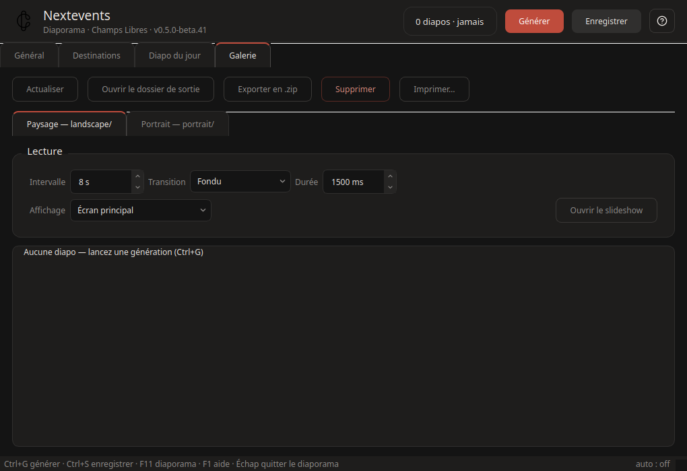
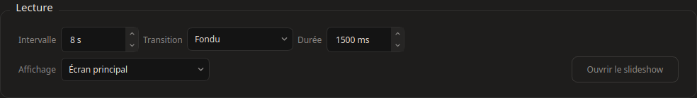

Un sous-onglet par orientation, calqué sur le dossier de sortie (landscape/, portrait/) : ce qu'on voit ici est ce que les écrans diffusent. F5 recharge les vignettes.
Lecture — réglages du diaporama plein écran, par orientation : délai avant lancement, transition (fondu, glissement, instantané), durée d'affichage par diapo, écran de diffusion (relu en continu : un écran rebranché est pris en compte sans relancer). F11 lance le diaporama paysage ; l'icône de notification peut aussi lancer les deux.

Par diapo — double-clic pour l'aperçu ; clic droit : régénérer une seule diapo (avec les réglages courants), lancer le diaporama depuis elle, ouvrir la fiche web de l'événement, supprimer.
Sélection multiple — « Supprimer la sélection » retire PNG + HTML des deux variantes et met le manifeste à jour : la prochaine synchro propage la suppression (régénérée si l'événement est toujours publié).
Actions — « Exporter en .zip » pour transmettre les visuels à un partenaire ; « Imprimer… » pour la sélection ou toute l'orientation — une diapo par page, le dialogue d'impression permet aussi l'export PDF.